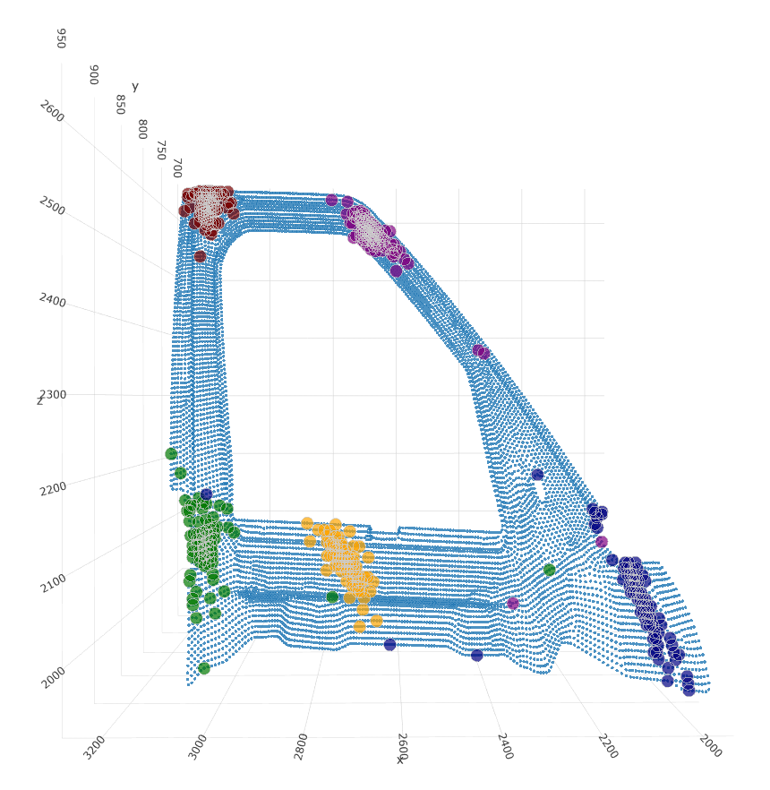

Point Cloud Visualization¶
The module consists of classes and functions to plot cloud of point data, voxels and KMCs

Fig 1: Cloud of Point with KMCs¶
Contains classes and methods for visualizing the cloud of point data, the KMCs and the voxelized cloud of point data
-
class
dlmfg.visualization.cop_viz.CopViz(nominal_cop)[source]¶ Cop Visualization class methods and objects to visualize different forms of COP data
- Parameters
nominal_cop – nominal_cop [nodes*3]
-
get_data_stacks(node_id_x, node_id_y, node_id_z)[source]¶ used to obtain co-ordinates for selected node IDs for each axis
-
plot_cop(plot_file_name)[source]¶ used to plot the COP data using plotly library
- Parameters
plot_file_name – filename with which the plot is saved